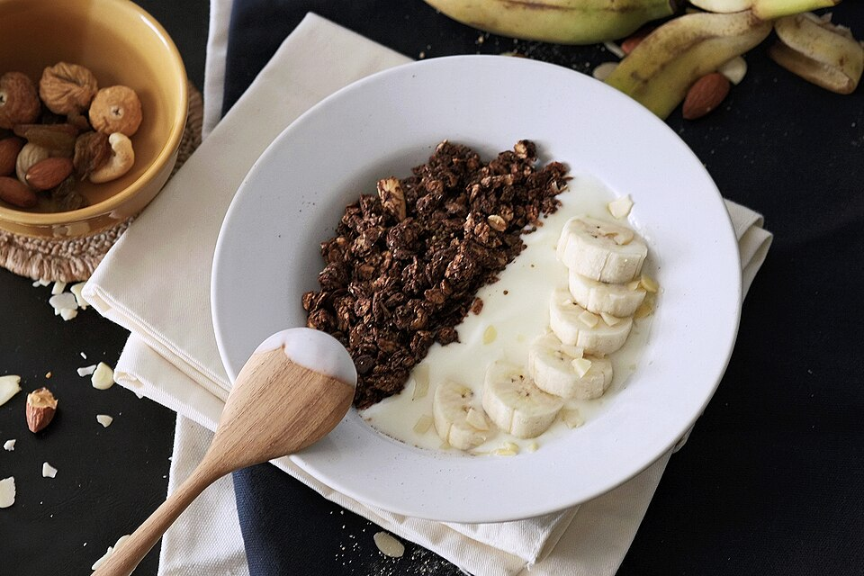

Recovery, Breakfast, Snack, Quick, By Claude
1 cup plain 2% Greek yogurt
1 banana, sliced (or 1 cup berries)
1 tablespoon honey
1/4 cup granola
Pinch of cinnamon and flaky salt
Optional
1/2 scoop whey protein, stirred into the yogurt (+12g protein)
1 tablespoon chia or hemp seeds
A no-cook recovery option with protein and carbs. Stir in a scoop of whey for a bigger protein hit.
Stir the whey into the yogurt if using, adding a splash of milk to loosen.
Top with banana, honey, granola, cinnamon, and salt.
To prep ahead: portion the yogurt into jars for the week and keep the granola separate so it stays crunchy.
~455 CALORIES
27G PROTEIN
10G FAT
68G CARBS
5G FIBER
Photo: Double choc yogurt.jpg by 1997SPP, CC BY-SA 4.0, via Wikimedia Commons. Representative image, not this exact recipe.